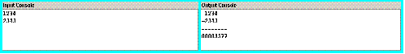

The Input / Output Consoles provide separate text areas for typing input and reading output. Using separate views is particularly useful for verifying proper echoing of data. Input should be entered in the Input Console at the end of the current input stream. The Output Console cannot be edited but can be copied.
